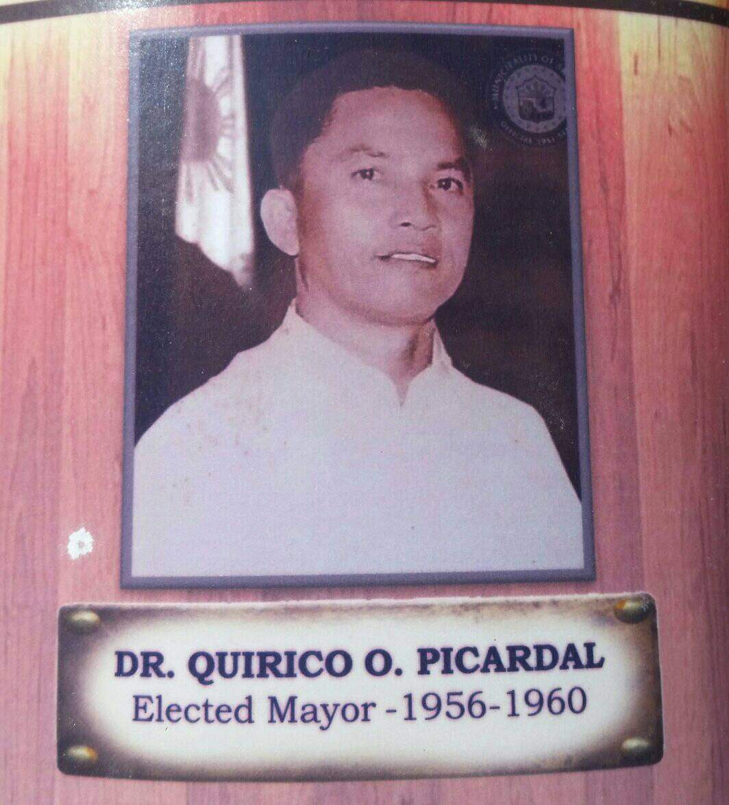

In 1956, after the term of Mayor Jorge Pajanustan expired, he was succeeded by Dr. Quirico Orcose Picardal, who served for two(2) consecutive terms, a total of eight years. It was Mayor Picardal who started the construction of the Municipal Hall.
